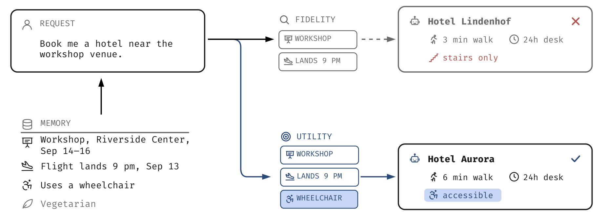
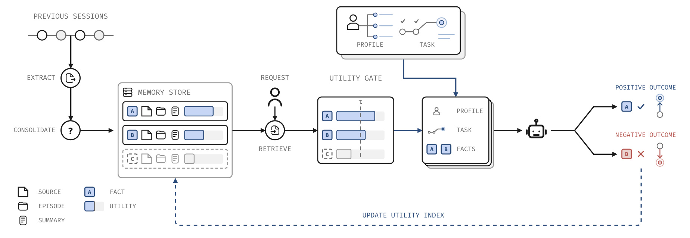
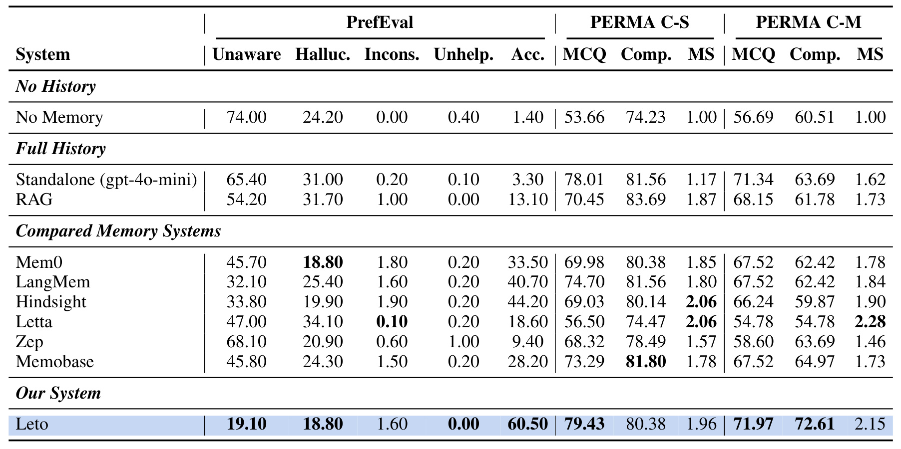
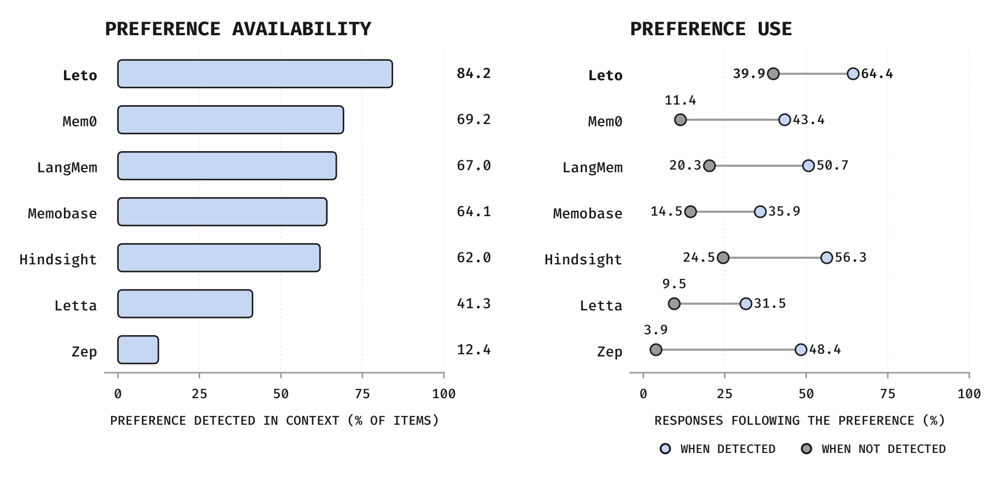
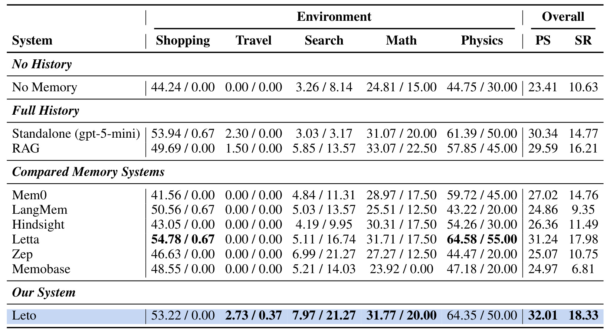
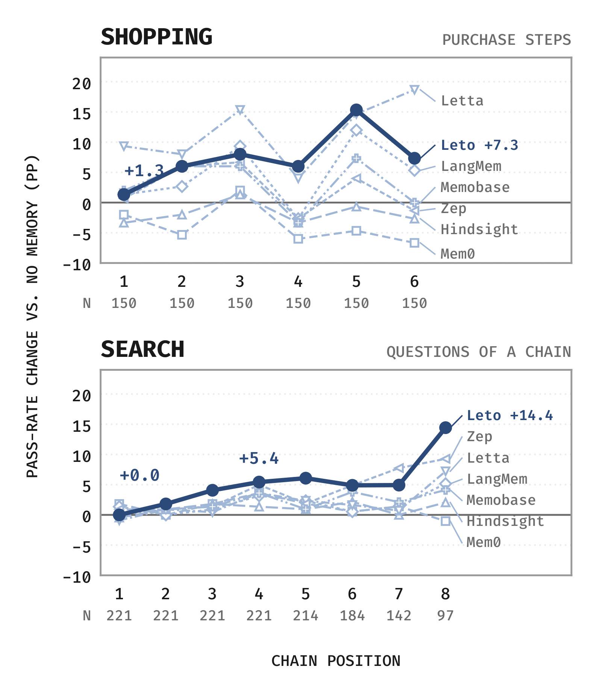
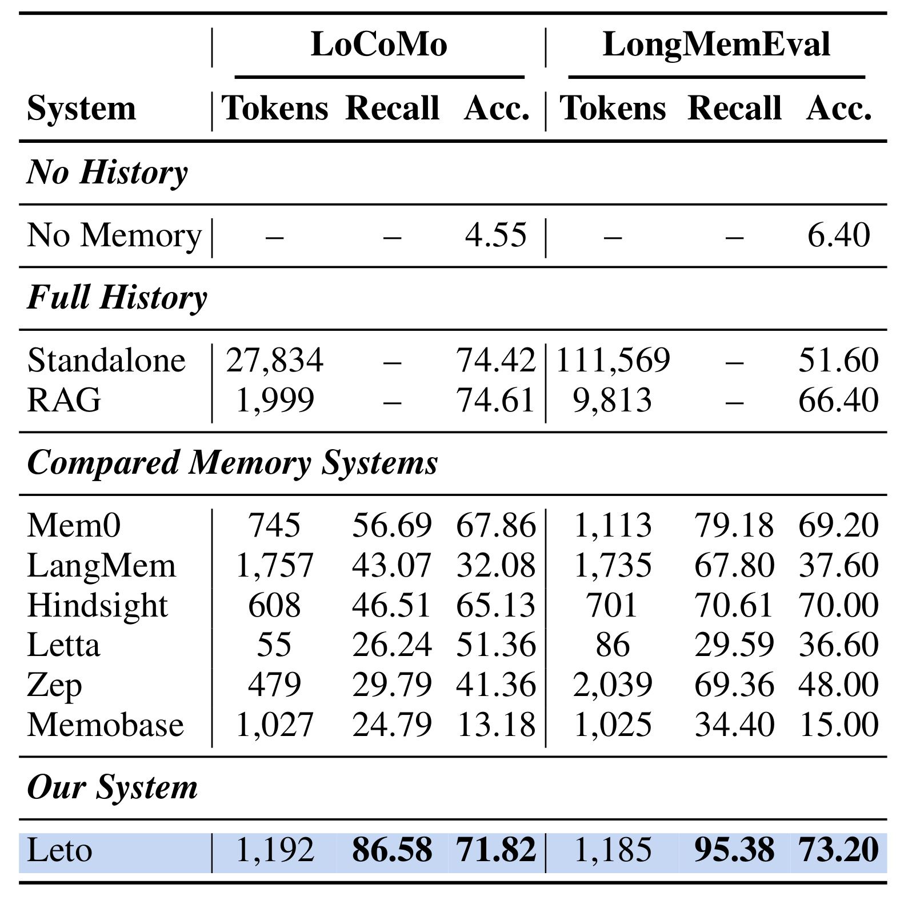
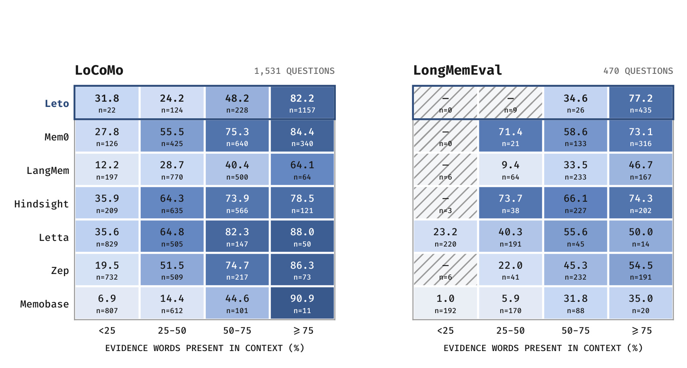

Leto：面向智能体实际任务结果的外部记忆
DigitalOcean 的 Shuguang Chen 和 Salman Paracha 提出的 Leto 面向要长期服务同一个人，或跨会话继续同一个任务的智能体。它给保留的历史建立事实索引，在新请求出现前准备可直接放入上下文的用户画像与任务状态，并用交互结果修订检索记忆的供给优先级。论文是 arXiv 预印本，作者的独立公开代码或项目页尚未核验。论文入口
外部记忆系统必须在回答生成之前决定保留什么、供给什么。对历史的保真度可以判断记忆是否忠实地记录了对话，却无法判断当时保留的细节和此刻供给的上下文是否会改善未来的回答。
1. 背景和问题
1.1 两个决策的缺口
一次问答可以把当前输入和最近几条消息一起送给模型。复用跨会话信息时，约束变了。某人可能三周前表达过持续有效的饮食或出行偏好，今天只问推荐地点。又如一个规划任务分几天完成，周一确定了一组候选和不能再改的条件，周三才提出查下一步，最后一句只提到眼前的子任务。沿着聊天时间截取最近窗口，容易错过两类信息。先前约束会改变当前动作的可用性，先前中间结果则决定下一步在何处开始。
外部记忆把这个过程分成两次判断。会话落盘时，系统要决定保留哪些信息。常见方案为对话写摘要、提取用户事实，或者以实体和带时间的关系组织记录。一套摘要可以准确复述讨论大意，却剪掉日后决定答案的限定语。这是论文的留存缺口。请求到达时，系统还要在历史的表示里挑出能放进提示词的材料。相似度对用户已经明确提出的主题有帮助，但对不再复述的约束缺乏直接提示。这是供给缺口。两次决策距离很远，且每次能观察到的信息不同。写入时连未来问题都未知，供给时知道问题但还看不见动作结果。
前一种缺口决定某段历史有没有机会进入候选，后一种决定它会不会真的跟着请求到模型手里。对于持续约束，“用户没有在本轮重说”本来就是智能体需要记忆的原因。若检索排名又把词面相似性当作主要依据，这部分信息即使存在，也可能永远排不到有限的上下文之内。论文用同一个记忆库上的订房示意把两种选择并列起来。

上方的请求卡只让助手在研讨会会场附近订酒店。左下是两条路径共同拥有的四项历史信息，会场在 Riverside Center、九月十三日晚上九点落地、用户使用轮椅、用户吃素。沿图上方的保真路径，会场与晚到时间被供给，找到三分钟步行距离且有全天前台的 Lindenhof，但入口只有楼梯。它满足了请求里明确的距离要求，也照顾了可从航班时间推知的晚到需求。漏掉的是直接改变这次动作可执行性的轮椅信息。沿图下方的效用路径，多供给这一项约束，最后选择六分钟步行距离、同样有全天前台且可无障碍进入的 Aurora。吃素这条事实仍在库里，图中两条路径均未带进本次订房上下文。这里的对照对象是同一份记忆库挑出的候选输入，酒店和属性均为虚构，示意图区分不了事实召回和记忆门控各能带来多少收益。这个例子同时解释了为什么任务评分要看结果。可以选到更近的店，也可以准确引用研讨会日期，但实际无法入住时，两项看起来正确的中间信号都不足以给动作判成功。
再换成确实没有轮椅条件的旅客，三分钟步行和全天前台可能足以支持动作，另外再带上一条衣食偏好只会占用上下文。也就是说，原文讨论的不是把所有用户属性都塞进每一轮，而是预测事实对特定目标的后果。即使用户本人偏好不变，请求从订房换成给活动地点做餐饮准备，素食信息也会从背景变成改变候选选择的要素。这样的任务依赖关系难以从历史文本单独推断，单看抽取出来的事实又无法衡量用户最终能不能完成动作。
1.2 为什么证据保真和任务结果会分开
保真仍然能发现有用的问题。若回答涉及一段对话，系统可以核验有无把人名或时间写错，检索阶段也可以计算标注证据是否出现在生成上下文里。局限在于这两项检查都发生在回答之前。简单的事实查询常常把主题说得很明确，能定位原文通常就有帮助。个性化请求和长链交互通常缺少足够的检索线索，证据即使已经进入上下文，模型还可能因为长输入的干扰、来源混淆或过度采用最近的说法而执行错误。完整记忆与简短有效提示之间，因此不能只靠同一项证据召回来做决策。
现有做法也在尝试处理其中的前瞻性。论文相关工作提到使用脱离原语境也能读懂的主张或提取实体为历史建索引，有些方法围绕预期后续决策保留记录。还有系统事先准备常驻上下文或在两次交互之间归纳记忆，Memory-R1 则用下游任务奖励学习记忆操作。Leto 组合了事实定位来源、在请求之前组成常驻块和每条记忆有一个随使用结果变化的优先级。组合中的三个决策服务不同目标。事实索引对付遗漏，常驻块对付请求没有重述必要条件，结果反馈则处理“相关材料最终有没有产生可见帮助”的不确定性。把三个目标混成单个检索相关度，会丢掉它们对应的诊断方法。
这里还有一项时间上的非对称性。写入多留了一段当时看不出用处的细节，直接成本是保存和维护。若它在摘要阶段被不可逆地扔掉，之后每一次依赖这段事实的请求都很难从同一份记忆补救。保存原话把这种不可逆的风险变成可再定位的问题。另一方面，全量可恢复不代表全量注入是合理的。供给错误会立即落到当前上下文里，产生注意力干扰或给模型错误的行动依据。Leto 采取较宽的保留策略和较严的供给策略，就是把两个代价拆开。选择何处合并和传输信息取决于哪些变化可以回溯、哪些会影响当前回答。
1.3 三种任务如何检验这两个缺口
论文选了三种对历史依赖形式不同的任务。PrefEval 把明确偏好放在当前请求前隔着填充轮次，考的是请求不复述偏好时模型是否延续它。PERMA 既问明确的个性化知识，也通过交互任务考验它会不会实际用上偏好，同一个用户的多领域信息可分别影响内容理解与行动。MemoryArena 将依赖分散在任务链的不同位置，前几步生成的信息可以改变后续子任务的完成概率。LoCoMo 及 LongMemEvalS 的问题通常较直接地指出要找什么，原始历史用向量检索也有机会找对。用同一条“记忆提升准确率”来总括这三种结果，会忽略原始请求在不同场景提供的线索量和模型使用上下文的机会。
这与大模型推荐和智能体排序的联系具体体现在下游动作。按请求相似度找到用户近期看过的题材，可能构成合格候选。若任务还需要提前满足跨主题的可达性、内容格式或用户明确表示长期有效的限制，纯同类召回可以交付视觉上相似却无法实际使用的条目。相反，某些跨域偏好只在极少数行动里需要，做成长期硬约束也会损失本来正确的候选。沿 Leto 的拆解，可以检查历史证据是否还存在、是否进入候选集合、是否得到提示词位置、最终动作在同一任务上有没有改变，并将错误定位到具体环节。论文主要测的是基准中的可核验任务结果，这个证据范围允许讨论产品设计的对应关系，实际线上推荐仍应以自身的候选环境和反馈另行检验。
2. 方法
2.1 原子事实索引与来源保留
Leto 的流水线围绕会话边界组织。写入阶段拿到新结束的一次对话，把原文接进存储并索引。两轮会话之间从存储拿出已有的用户与任务信息，准备可常驻的上下文。新请求到达后才用它匹配事实索引，按优先级决定可供给的检索项。下一次使用反馈来自本轮交互，更新之后才影响未来供给，因此生成当前回复时用的是已有的排序分。

图中左侧圆点链是已发生的会话，抽取和合并依次输出到记忆存储。记忆卡上区分了短事实、原始来源、会话摘要与效用，不能把四种字段视作同一份压缩文本。中间有两条输入路径。上方用户画像和任务状态在请求出现前已经生成，它们直接进入右侧的输入堆叠。中间的请求路径从存储检索候选，图例用 A、B、C 标出来。门控框用阈值线表示哪些候选被允许进入生成上下文，A 和 B 已供给，较低的 C 留在存储中。提示词里的两类内容因此有不同入口。画像和任务承担跨请求可复用的背景，检索结果携带和当前请求有关的原文。右侧的正例和负例展示结果返回到已使用的记忆分，不向当前回复反向补写上下文。图只示范用 A、B 表示正负记录，正文明确说真实一次结果可能涉及多条同时供给的记忆，单条贡献不易分解。把图沿着时间读，可以区分两个经常被混读的步骤。上一会话结束后先把背景压缩成下一会话开头直接使用的块，现有背景以后仍可改写。请求到达时才发生对短事实键的检索和阈值过滤，查询相似度影响进入候选的范围，而上部常驻路径不必等候这个信号。也就是说，阈值以下的事实仍能留在库里，反馈改变的是未来检索到它时的供给机会。这个区分也决定了消融时要分别冻结画像、候选集合和阈值，才能识别收益出自哪条边。
原子事实表达一项可以单独读懂的主张。系统把它用作索引键，值是一段包含事实出处的相邻原始消息。若直接索引原消息，一个向量片段里可能夹了多个主题，指代也依赖附近轮次。若把抽取事实作为唯一供给文本，索引容易比对，却可能只返回模型提炼过的一句话。短键用于匹配，来源片段用于给出细节及限定条件。 事实键定位某次讨论后，原话的措辞、资格条件和邻近内容仍可随之传入。更新事实时，系统通过合并确定某条新说法是否替代旧说法。这意味着当前有效值和曾经成立的值可以分开，历史仍可用于回顾过去状态。每次会话另有一个简短摘要，方便后续生成画像和任务轨迹。
这一模块的能力边界也来自索引。原始消息若没有任何事实键指向，且不在其他命中键的相邻来源里，仅仅存进系统不会令它出现在请求的检索结果中。选择相邻片段保留多少既决定信息找回机会，也决定每条候选的输入成本。原文报告的是系统算法，未给这套流程独立训练的目标函数，也没有为抽取覆盖给出端到端保证。选择事实粒度、保留来源片段和合并替代属于写入逻辑，请求到来后的事实匹配和候选供给属于推理前处理。
2.2 请求前准备常驻上下文
记忆回放发生在两次会话之间。 它从已整理的存储读取用户事实和历史会话摘要，改写一份简洁画像。画像描述无论请求如何措辞都可能长期成立的偏好、约束或行动指示，可合并讲同一主题的项，并省略已被替代的偏好。使用场合是新会话的起始上下文。系统在当前请求到来前就完成了改写，因此无需先相信当前请求与某个约束的相似度够高，也不会把第一次看到的请求词当成用户画像依据。这里保留了历史变化线索，之后的回放仍能更新画像。原文 PrefEval 的做法明确把这类短画像放进每个评估条目，便于观察背景可见性变化。
若声明了具体任务，回放也会准备任务状态。论文将其写成两部分，一部分按实体聚合当前事实，为属性给出最新值，另一部分按顺序排列先前会话摘要，交代如何到达这个状态。下一轮可同时看到现值和来路。以连续搜索为例，现值可以告诉智能体已经锁定哪一项实体，时间顺序有助于理解某个条件何时确立。只有会话串联关系被正确识别，当前任务得到的状态才匹配。如果一项历史事实来自另一个任务，或者生成摘要把一次暂定方案改写成最终决定，即使常驻块按设计送达，行为仍可能被污染。因此复用画像与继续任务使用同一回放时机，却需要不同的存储作用域和更新逻辑。
常驻内容会和请求相关的检索来源一起送到响应代理。对题面清楚、此前没有未决任务的场景，较大的常驻块可能不值它占用的输入位置。对没有说出持久约束的请求，较短的常驻块可以让检索专注于临时事实。原文给出的证据是完整系统、条件表现与失败分析，无法单独量化画像和任务状态分别提升多少。这个方法的实现重点是先确定两类信息分别来自哪一次会话和何种存储视图，再决定生成请求的输入如何组装。
2.3 响应效用、代理反馈与门控
论文第 3 节的式（1）把整组记忆的效用定义为在同一输入和代理条件下，有无这组记忆的结果差。它为对照实验定义了要测量的对象。
符号解释：$x$ 是当前请求，$M$ 是最终提供给代理的记忆集合，$\varnothing$ 表示不提供先前会话的记忆。$y(x,M)$ 和 $y(x,\varnothing)$ 是两种条件下的任务结果。若为二值成功标签，记忆把失败变成成功时差值为正，反向时差值为负，两次结果相同时效用为零。用于机制评估时它对应整份上下文变化。即使知道一组来源帮了当前任务，也不能把这份收益直接拆给每一条记忆。若保留整段会话但未供给相关材料，保留动作产生的价值也无法在当次结果中立即观察。
上线选择时没有同一个请求的双路结果，论文以可读取的反馈分给每条已使用的记忆修订优先级。新增记忆有先验预测 $u_0(m)$。后续交互里按词法规则检测确认、记忆使用或纠正，分别记录正向或负向信号。有可量化的任务结果时也可以给供给期间的记忆记录评分。式（2）把先验当成若干次同值观测，并同新采集的反馈取平均。
符号解释：$m$ 是记忆条目，$u(m)$ 是它当前的服务优先级，范围为零到一。$u_0(m)$ 是初始效用预测，$o_i$ 为第 $i$ 个反馈，正例记一，负例记零，可用时也可用标尺化的任务分。$n$ 是已经观察到的反馈数，$k>0$ 是赋给初始预测的伪观测数，$\tau$ 是通过供给门槛的最低分。初期 $k$ 越大，少数反馈越难改变先验。反馈多起来后，候选之间过去被确认或纠正的差别才逐渐显现。举例说，如果先验为零点六且权重为四，一次正反馈会将它提到零点六八，再来一次负反馈则降到约零点五七。分数计算直接作用于请求检索后的候选。达到阈值才可供给，候选记忆超过 token 预算时优先较高分。低优先级不会删除事实或来源，保留策略不随这一阈值一起收紧。
式（2）得到的是启发式供给分。一次任务的反馈会落到同轮多条记录上，即使其中只有一条实际改变了生成。确定的负向词法也可能来自模型给错答案而非读到错误记忆。另一端是没有被召回或一直低于阈值的项目，缺少被使用的机会，自然积累不到反馈。把该分当成式（1）的个体处理效应会高估证据的辨识度。论文给出的优化机制是更新优先级和控制候选供给，结论将学习更好的效用先验、拆解个体条目贡献和跨代理迁移列作未来工作。
3. 实验结果
3.1 按任务固定记忆范围和评测单位
五个基准都需要复用较早的信息，见原文附录 Table 4。PrefEval 有一千个评估条目，每条单独维护存储，这里报告间隔十个填充轮次的偏好遵循。PERMA 选择 type-3 的干净单域与多域条件，分别有 423 和 157 个评分单元，记忆按用户组织，报告多选题准确率和互动任务完成率。MemoryArena 的存储按任务链隔离，表中 4,850 是评分单元数，包含 1,869 个旅行者轮次、900 个购物步骤、1,641 道搜索问题、354 项数学子任务与 86 项物理子任务。链粒度的成功率和这些子任务计数也须分开。LoCoMo 有 1,540 道纳入结果的题，记忆按一段对话处理，论文按已有设定排除了对话无答案的对抗类。LongMemEvalS 有 500 道题，每题自带历史，包含 30 道要求拒答的题。两套问答评测报告最终回答准确率，另对可对齐的证据计算召回。
六个外部系统是 Mem0、LangMem、Hindsight、Letta、Zep 和 Memobase。有基准推荐配置时沿用该配置，否则采用各系统文档中的设置。No Memory 屏蔽前序会话记忆，Standalone 让基准代理直接使用全量历史，RAG 保留全量历史但用嵌入相似度召回原始对话块。无记忆对照用于衡量相同条目的结果改变。全文对照回答“完整送进去之后代理能用到多少”，RAG 则给出按当前请求索引原文的强比较线。六个记忆产品之间配置和压缩策略有差别，因此需同时保留三类对照。原文未给出按模块逐项移除再以固定预算重测的正交消融。后续图里的机制证据来自诊断分组、链深变化和检索失败分析。
3.2 偏好遵循与个性化完成
PrefEval 评价生成有没有满足已知偏好，以及是否违反或编造了约束。PERMA 则在多选题和交互任务之外，单列上下文和标准偏好的记忆分。两套任务可以同时验证偏好被看见与偏好被用到的差别。

左边五列分别是没意识到偏好、幻觉、一致性错误、无帮助和个性化准确率。Leto 的准确率为 60.50%，高于最强外部记忆对照 Hindsight 的 44.20%，绝对差 16.30 个百分点。没意识到偏好的违例率从 Hindsight 的 33.80% 降至 19.10%，是同表最明显的错项差异。Leto 的幻觉仍有 18.80%，一致性错误仍有 1.60%，因此看到了偏好也可能组合出错误约束。放全文的 Standalone 只有 3.30%，原始 RAG 为 13.10%，表明对这套偏好设置，单纯延长历史或按当前问题找原文留下了很大空间。
右边把 PERMA 单域和多域的三列完整重复，MCQ 为多选题准确率，Comp. 为任务完成，MS 衡量供给上下文对标准偏好的保真程度，取值从一到四。Leto 在单域 MCQ 为 79.43%，多域为 71.97%。多域完成率 72.61%，比最强外部记忆系统 Memobase 的 64.97% 高 7.64 个百分点。单域则是原始 RAG 的 83.69% 高于 Leto 的 80.38%，Memobase 在这一列也为 81.80%。跨两种条件对任务完成率做等权平均，Leto 为 76.495%，Memobase 为 73.385%，差约 3.1 个百分点。两列样本数不同，这一结果应按论文所用的条件平均理解。多域中 Letta 的 MS 是 2.28，高于 Leto 的 2.15，但 Letta 的多选和完成均为 54.78%，说明对标准偏好表述的命中与决策成功可以分离。对需要在两个相邻领域满足独立约束的智能体，多域高于原文检索的结果支持形成跨域画像。单域排名则提示同一加法可能没有相同收益。
还可以在同一列对比无记忆基线。单域完成率从无记忆的 74.23% 到 Leto 的 80.38%，多域从 60.51% 到 72.61%，同一方法在两类任务上可改善的空间并不相同。任务上已经做对的选择可能被新增上下文改变，因而观察净差后还要区分原先正确后来出错和原先错误后来做对的样本。原文的配对附表正好提供这种拆分。
PrefEval 的无意识违例变化还可以顺着供给链追一层。作者问有多少条目的生成上下文确实出现了偏好内容，再看模型在出现与未出现时各能做到什么。

左图是词法检出率，支持材料里出现偏好内容词的比例至少达到四成时记为检出。Leto 在 84.2% 的上下文中检出，高于 Mem0 的 69.2% 和 Hindsight 的 62.0%。右图每行是一种系统，浅蓝点为可检出子集遵循的比例，灰点为未检出子集，水平线连接两者。Leto 对应 64.4% 和 39.9%，说明常驻画像提高了可见范围，而可见范围内的实际遵循还受响应代理影响。Zep 只有 12.4% 的条目检出，即使已检出时达到 48.4% 的条件遵循，覆盖仍限制总体准确率。相反，把灰点读成“没有任何记忆还能做到的比例”会高估无记忆能力。一条偏好可能已经被释义压缩，刚好低于字词检测门槛，模型仍可使用。每种系统检出的样本也不同，条件遵循差同时受提交给模型的表述和这个子集的题目难度影响。全文对照的偏好确实处在完整历史中，但最终只在极少数条目里得到执行。图里两面板连起来支持把可见性和使用情况分别记录，单独改变画像的精确效果仍需要固定检索候选后做对照。
如果用图里两组量分解 Leto 的总体偏好准确率，可用检出的八成四作为权重，给较高的条件遵循率较大份额，用剩余比例加权未检出时的遵循率。按原图保留一位小数的近似值计算，两部分合起来约六成，基本对应主表。这是同一批条目的描述性拆解，对照系统中的蓝点或灰点能因样本重分配变化。要判定是画像消除了歧义还是模型恰好更容易处理检出条目，可以只去掉一项已记录的偏好并给模型相同长度的其他条目，再对同题看输出是否翻转。
3.3 长链任务的进度与成功
MemoryArena 考察购物、旅行、搜索、数学、物理五种有跨会话依赖的环境。进度分度量任务链已经推进到什么程度，成功率在搜索按最后一题成功计，在其他环境按整链完成。后者会对一条链上任何先前遗漏比较敏感。

表内每个环境用斜线并列进度分 PS 和成功率 SR，表右的两个 Overall 把五个环境分别等权平均，不能拿子任务更多的旅行或搜索加权。Leto 的总体 PS 为 32.01%，SR 为 18.33%，均为表中最高。对 No Memory 的 23.41% 和 10.63%，分别提升 8.60 和 7.70 个百分点。最接近的外部系统 Letta 达到 31.24% 和 17.98%，总体差缩小为 0.77 和 0.35 个百分点。原始 RAG 的总体为 29.59% 和 16.21%。总体最高只表示五个环境平均的排序，不能外推成每个环境里都优于所有对照。搜索中 Leto 的 PS 7.97%、SR 21.27%，后者与 Zep 持平，高于 Letta 的 16.74%。物理里 Letta 的 64.58% 进度和 55.00% 成功率略高于 Leto 的 64.35% 和 50.00%。购物中 Leto 的进度达 53.22%，整链成功率为零，Letta 则为 54.78% 和 0.67%。数学中原始 RAG 的 33.07% 进度和 22.50% 成功也高于 Leto 的 31.77% 和 20.00%。
这些差别解释了为什么要保留双指标与拆分。一个系统能做对更多中间动作，可能仍无法跨过整链所有控制条件。旅行的完成率多数接近零，即使 Leto 独有的 0.37% 在表内最高，也缺乏绝对可交付水平。相较无记忆的逐条收益表中，作者统计 Leto 在五种环境的有帮助比例都超过有害比例。这一按环境的正净差与某个环境完成总水平很低可以同时成立。在工程队列里选测试任务时，对长链流程同时观察前置步骤正确率和终点可交付率，可避免只看平均子任务通过率就接受方案。
对照总表还可以发现，全文 Standalone 的平均进度高于原始 RAG，成功率却是相反排序。任选其中一个单项去总结基线强弱都会留下遗漏。错误如果集中发生在同一条链的前几步或均匀分散在许多链上，平均进度和最终成功之间也会形成不同关系。因此这组结果不能用单一相对涨幅替代整张表的两个列头。
作者进一步按照购物步骤和搜索题的位置比较不同系统相对同一个无记忆对照的变化，检验状态复用的收益有没有随依赖加深而扩大。

纵轴是相对无记忆通过率的百分点差，横轴为链内位置，零线表示与基线持平。购物每条链固定六步，所以每个位置下方都有一百五十条链。Leto 从第一步的 1.3 个百分点到第六步的 7.3 个百分点，第五步更高，Letta 到末步的增量更大。这说明两个端点的变化不等于逐步单调上涨，同一模式也不一定胜过所有结构。搜索处第一题接近零，第四题约 5.4 个百分点，第八题达到 14.4 个百分点，Letta 在最后位置为 7.2 个百分点。搜索只在够长的链上能观察最后几题，样本行从最初的二百二十一降到第八位的九十七。后段差值反映的是到达相同位置的任务集合，不能把变化完全归因于链深本身，更不能据此推断每个场景里所有后续请求都有同样的提升。原文两条轨迹与“越到后面越依赖已建立的任务状态”一致，但走到后段的任务类型、难度或跨会话依赖都可能变化，固定链群再统计可以进一步区分这些因素。
图里的深色线表示同位置和无记忆组作差得到的增量，无法反推出该位置的绝对通过率。无记忆本身若在后段更难成功，即使带记忆的后段准确率没有较前段提高，也可能出现相对差值变大。以购物为例，所有链都有六步，分母恒定减少了链群构成变化的解释，却保留每一步目标及难度不同的问题。以搜索为例，两种影响同时存在。把前半和后半的位置都限制在至少能走八步的原定链群，再结合每步的基线与带记忆比例，会比只比较两个端点更接近“可复用状态如何随深度积累”这个问题。
3.4 长对话问答的准确率与上下文成本
长对话问答通常直接指出要找的历史事件、人物关系或时间。在这个设置下，原始历史 RAG 能靠局部证据作答，给更复杂的记忆系统提供了更强对照。原文同时报告问答正确率和供给量，允许观察是否以更多输入换得结果。

两组列分别是 LoCoMo 和 LongMemEvalS，每组依次给出每题检索记忆的 token、证据召回和最终准确率。Standalone 的 token 是直接放入的全历史，其他系统记检索来的记忆，因此这些列的作用是比较上下文开销，不是完整系统的算力账。LoCoMo 上 Leto 用 1,192 token 获得 71.82% 准确率，原始 RAG 用 1,999 token 得到 74.61%。少用约四成检索 token，同时低 2.79 个百分点。在 LongMemEvalS 中，Leto 用 1,185 token 获得 73.20%，原始 RAG 用 9,813 token 获得 66.40%，绝对收益为 6.80 个百分点，对应原始检索使用约 8.3 倍记忆 token。相对六种记忆系统，Leto 的问答准确率在两个基准均领先，但证据利用收益随问题类型有明显差异。
Recall 只对专用记忆系统报告，表中 RAG 的横线表示此列没报数，不能用 Leto 的 86.58% 或 95.38% 推断它一定高过原始 RAG 的同口径证据召回。它们高于被比较的外部记忆系统，其中 LoCoMo 最接近的是 Mem0 的 56.69%，LongMemEvalS 为 Mem0 的 79.18%。这是“抽取短键后返回来源有助于保留证据词”的整套系统证据，检索器和输入构造的独立作用依旧没有拆出。LoCoMo 的完整历史对照用 27,834 token 得 74.42%，对 LongMemEvalS 放 111,569 token 后只有 51.60%。两对数字也表明长输入可以增加访问机会，实际响应读取哪一段历史仍影响准确率。表未报告写入计算、底层存储、读写耗时、端到端延迟或线上规模成本。与原始 RAG 比较输入长度时可以给出清楚的单位，部署吞吐收益仍需独立测量。
附录 Table 7 把 LoCoMo 的落后进一步定位到单跳题，Leto 为 76.69%，原始 RAG 为 82.05%。作者检查 RAG 答对而 Leto 答错的单跳题，约四成有标注证据消息没有任何抽取事实指向。这个比例只针对两系统分歧中指定的一方，支持但不能穷尽索引漏键的失败路径。时间类则是 Leto 72.59% 对 RAG 72.27%。附录 Table 8 中，LongMemEvalS 时间推理 73.68%，比 Hindsight 的 62.41% 高 11.27 个百分点。多会话 Leto 61.65%，低于 Hindsight 的 67.67%。三十道拒答题也重叠计入各问题类型，Leto 在拒答题上只有 63.33%，而原始 RAG 为 80.00%。无记忆对照拒答子集达到 100.00%，它在全题准确率只有 6.40%，所以该列只能描述特定的无答案行为。
证据召回以证据里的内容词为分母，计算哪些词出现在供给给代理的上下文里。词按小写处理，排除停用词且至少四个字母，先按证据消息平均，再按题平均。下图把这种召回代理和条件准确率并置。

左图为 1,531 道有标注证据的 LoCoMo 题，右图为 470 道可回答的 LongMemEval 题。横轴从最低到最高四档是证据内容词被供给的比例，格中主数字是答对率，下方的小字是该系统落到该档的问题数。斜纹覆盖不到十题的格子。LoCoMo 中，Leto 将 1,157 题归到最高档，该档答对率 82.2%，而 Mem0 最高档 340 题，准确率 84.4%。若只看条件百分比，会错过 Leto 把更多问题推入能看见足够材料的输入。读 LongMemEval 的最右列，Leto 在最高档 435 题上为 77.2%，Mem0 在 316 题上为 73.1%。Leto 在较低档中的九题以及二十六题不应与几百题的大桶等权解释。不同方法的分桶由它们各自供给的内容决定，最高档并未固定为同一批问题，因此不能拿几个高低档数字作模块因果比较。若词面形式稍有变化，也会低估原本含义一致的句子。相反，证据词来自错误的人或版本但碰巧相同，也可能给出较高分。附录另报告，LongMemEval 的标注证据会话对 Leto 有 98% 的问题可达，对 RAG 是 99%，这些题的准确率分别是 75% 和 67%。会话到达与解题成功之间仍有能够区分供给形式的空间。
此外，右图选用标注答案会话中最匹配的一轮作证据代理，左图则沿用已经标注的证据消息。两套命中逻辑会影响落桶，因此不宜直接用右图最高档的人数比例给另一数据集排名。左图里甚至可看到 Leto 最低档的答对率高于第二档，前者仅二十二题，后者一百二十四题。这样的局部逆序与多数样本受益于证据覆盖并不矛盾，也说明应优先汇报被移到哪一档以及样本量。如果要把桶内数字用于提示词选择，可以改用同一道题、同一条确证出处，只删减含证据的词串再比输出，另行检验主张是否更能归因于内容。
3.5 配对收益与伤害
附录 Table 5 与 Table 6 以同一个评分单元和 No Memory 作配对。记忆系统成功、无记忆失败归入受益，反过来归入受损，相同结果不增减。以 PrefEval 为例，Leto 的受益率为 59.30%，受损率 0.20%，相减为 59.10 个百分点，正好对应总体准确率从 1.40% 到 60.50% 的差。这里多数无记忆条目都失败，允许翻成受损的基数很小。PERMA C-M 任务中，无记忆能完成 60.51%，更容易观察到原先成功而加记忆后失败的情形。Leto 与 Memobase 在这一列受益率都为 18.47%，但受损率分别为 6.37% 和 14.01%。多域完成率的净差主要由受损减少解释。这个结论来自整个供给条件的变化，不能直接改写成效用门槛单独拦住了某类偏好。购物的配对表按单步通过算，同表全链成功不能用配对净差直接换算。材料支持看受益与受损两端，特别是工作流原本已有较高成功率时，新增记忆引入的退化会实际改变上线判断。
4. 总结
4.1 关键判断
Leto 对实际应用最有价值的区分是，保留原始材料和让它进入模型输入是两个控制点。历史索引允许未来的新请求重新发现当初看起来次要的文字，当前请求仍只得到预算内的候选和已经准备好的常驻状态。PrefEval 的偏好检出与条件遵循的差别，以及 PERMA 多域受损率的下降，让这个区分快速落到可检验的结果。LoCoMo 的原始历史检索领先则限制了这项结论。问题自身已经给出明确定位线索时，抽取以及建索引反而可能切断原始 RAG 本来存在的通路。
对实际产品，我会先验证两类有明确行为后果的请求。一类用户没有重述持久限制，另一类问的是某一段旧记录的具体事实。对前者记录候选是否满足长期限制，以及结局是否从失败转为成功。对后者检查引用证据能否回到原文，遇到没有事实键的消息时多久能定位。这样才能把更少的输入 token、候选定位正确以及行动可交付解释在各自的范围内。MemoryArena 的购物例子给了直观提醒，平均中间进度上升与整链完成仍为零是两种可以同时出现的状态。
4.2 局限与后续核验
- 留存成本和可达范围。 保存完整历史会增加存储需求，抽取和合并也在写入侧花额外计算。没有事实键覆盖的消息仍可能只在命中邻近来源时被读到。论文的每题输入 token 可以核算读侧，写入时延、保留周期与索引字节还需要实测。
- 常驻信息会过期或产生误读。 从历史生成的画像和任务状态可能把过去的约束当成现值，也可能把暂定决定写成已确认事实。持续注入使错误扩散到多条请求。新会话应该能追溯生成的状态对应哪些原始消息，在偏好修订或任务切换后复测更新是否落到下一会话。
- 反馈分辨率有限。 同轮供给的多条记忆都可能获得一个共用结果，附带信息也能领到正反馈，正确记忆也可能因为响应行为错误而被降分。未供给的条目无法在相同机制里得到新观测，形成曝光偏差。积累更多交互能让式（2）数值更稳定，无法自动证明条目有独立因果贡献。
- 收益依赖代理与任务。 同样的证据对两个代理可能作用不同，模型理解上下文的方式和拒答倾向也会影响测量。Lexical 召回同样只测词覆盖。切换响应模型时需检查在同一批输入上，正确答案、拒答和错误采纳的变化。论文没有给跨代理通用的效用分。
我会优先补三组对照。第一组固定生成模型和读入 token，分别比较原文检索、事实键返回来源、加常驻上下文、再加反馈门槛，记录每次变化对应的失败类型。这样可以拆开完整系统里每个组件提供的价值。第二组按索引覆盖、历史新旧版本、答案是否存在和链深分层，保存同一批条目的可达消息与最终结果。至少让单跳漏键、错误拒答或未更新任务状态在样本表中可定位。第三组给记忆供给机会和反馈标注配套的对照，在安全、可恢复的离线评测中观察低初始分的条目是否有改善空间，同时记读侧输入、写侧处理和存储成本。它们分别回答组件贡献、机理失效和工程成本，能让是否引入效用门槛落在独立于摘要质量的证据上。